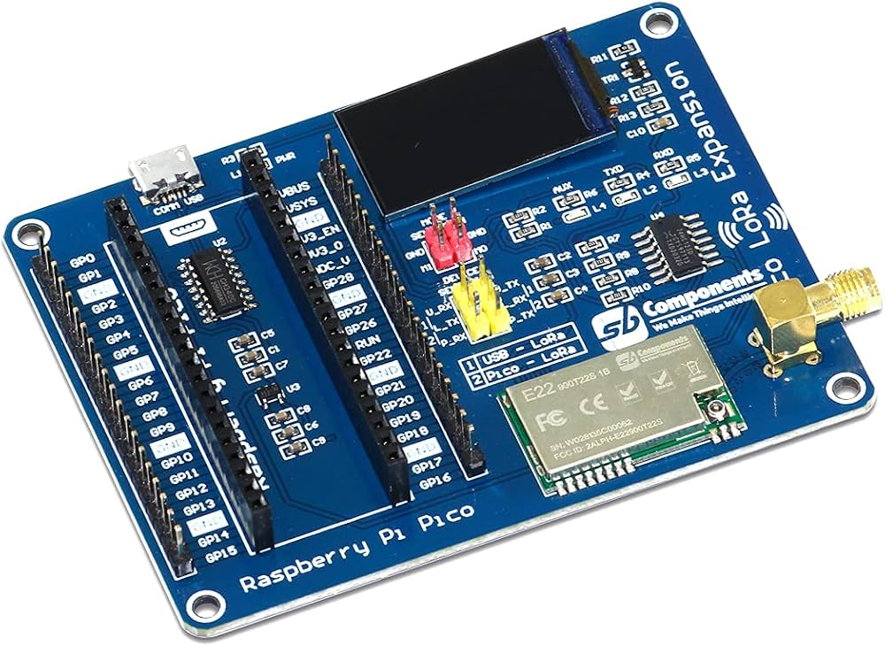
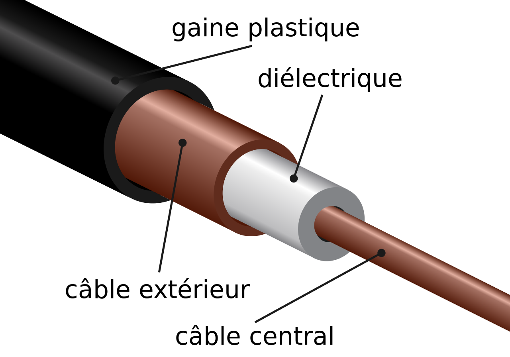
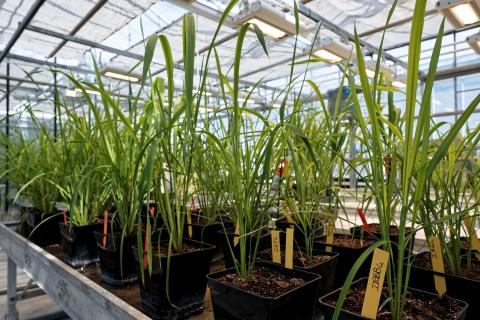

SAÉ Smart City : Développement d'un système de gestion de parking intelligent.
Conception de capteurs autonomes pour détecter l'occupation des places et centralisation des informations en temps réel grâce à la technologie LoRa (LPWAN).
Compétences techniques mobilisées :
Maquette fonctionnelle réalisée en équipe avec répartition des tâches techniques.


SAÉ 13 : Étude des supports de transmission, spécifiquement le câble coaxial.
Découverte du fonctionnement et des composants du câble coaxial. Réalisation de manipulations physiques pour observer l'atténuation du signal et l'adaptation d'impédance.
Capacité à analyser un signal et à annuler l'écho d'un câble coaxial.
SAÉ : Développement d'un objet connecté autonome pour l'Agriculture Intelligente (Smart Agriculture).
Conception d'un capteur mesurant le taux d'humidité du sol avec transmission longue portée (une fois par heure) via le protocole LoRa (LPWAN).
Compétences mobilisées :
Capteur autonome fonctionnel respectant les contraintes énergétiques, réalisé via un fort travail en équipe.

Projet de Terminale STI2D : Connecter une vanilleraie (serre de production de vanille) située en zone blanche (sans couverture réseau).
Déploiement de cartes LoRa pour assurer la communication. Création d'un système autonome écologiquement pour la production électrique. Développement d'une application permettant de consulter les caméras et de recevoir les alertes d'intrusion.
Système de télésurveillance agricole autonome et connecté, validé par l'obtention de la note de 14/20 au Baccalauréat.